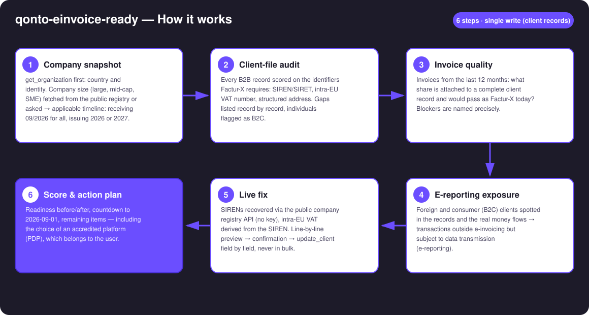
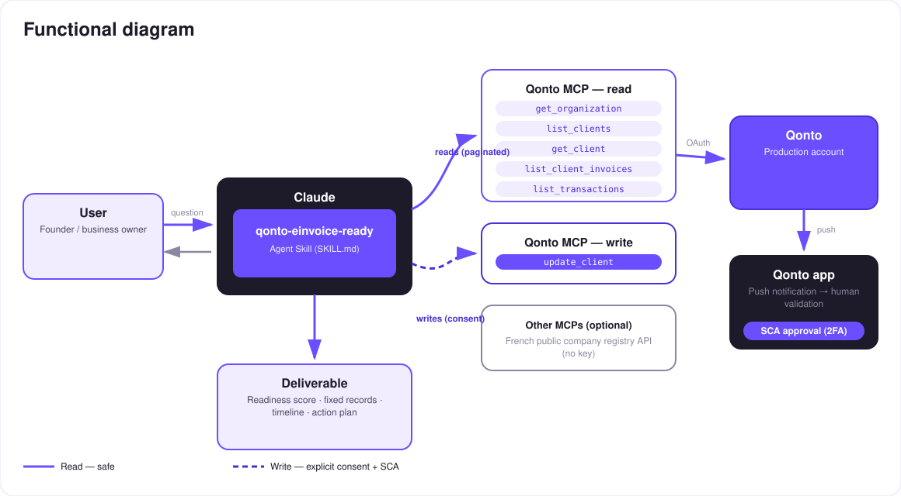

Ready for France's September 2026 e-invoicing mandate? The audit that measures the gap — then closes it, one confirmed record at a time.
On September 1st, 2026, every French VAT-registered company must be able to receive electronic invoices (issuing: 2026 for large companies & mid-caps, 2027 for SMEs). The trap isn't the date — it's the client file: no SIREN, no intra-EU VAT number, no structured address = no valid Factur-X. The skill turns the Qonto account into a readiness check-up:
Client file complete for Factur-X, invoice quality, timeline known, e-reporting mapped — transparent formula, before/after.
Company size fetched from the public registry (large/mid-cap/SME) or asked, never guessed → your issuing date, 2026 or 2027.
Foreign and B2C clients spotted in the records AND the real money flows: outside e-invoicing, but data to transmit.
SIRENs recovered via the public registry API (no key), line-by-line preview → update_client after your confirmation.
Would someone run this on a Monday morning? With a legal deadline counting down for every French business, it's the Monday-morning question of 2026.
| Prerequisite | Detail | Required |
|---|---|---|
| Qonto production account | Adapts to any organization — get_organization first, nothing hardcoded | ✅ |
| Country | French reform. Other Qonto countries (DE, ES, IT…): generic client-file completeness audit, never an invented deadline | ℹ️ detected |
| Qonto MCP connected | Official connector (claude.ai / Claude Desktop), OAuth login | ✅ |
| Client records in Qonto | The raw material of the audit; with none, the skill explains the reform reference and stops there | ⭕ |
| Public registry API reachable | recherche-entreprises.api.gouv.fr — no key; if down, the audit still runs, only the live fix waits | ⭕ |
| Company size | Fetched from the registry (categorie_entreprise) or asked — sets your issuing date | ℹ️ detected |

get_organization always first (list_transactions requires bank_account_id/iban)
A write that never touches money: reads are risk-free; the write is update_client — client records only. Full preview (current → proposed, with its source), explicit confirmation in the conversation, then field-by-field writes. Never a silent bulk update.
| Date | Obligation | Who |
|---|---|---|
| 2026-09-01 | Receive electronic invoices | All French VAT-registered companies |
| 2026-09-01 | Issue electronic invoices | Large companies & mid-caps (ETI) |
| 2027-09-01 | Issue electronic invoices | SMEs & micro-enterprises |
| Same as issuing | E-reporting (B2C + cross-border transaction data) | All, per their issuing date |
| Step | What happens |
|---|---|
| Lookup | recherche-entreprises.api.gouv.fr by name + zip — public data.gouv API, no key |
| Homonyms | Several plausible candidates → name, city, SIREN shown, the skill asks |
| Intra-EU VAT | Derived from the SIREN — always labeled "derived, to be confirmed" |
| Preview | One table: client · field · current → proposed value · source (registry / derived / user) |
| Write | After explicit confirmation: update_client field by field, outcome reported honestly |
Example (fictional, invented numbers): "Readiness: 62%. 9 of your 14 clients have no SIRET — I found 7 in the national registry. Line-by-line preview, do you confirm?" → after the writes: 91%.
| Output | Format | When |
|---|---|---|
| Conversation reply | Markdown tables: detailed score, incomplete records, timeline, e-reporting exposure | Always — the baseline |
| Fix preview | One table: client · field · current → proposed · source, pending confirmation | Every proposed fix |
| Readiness report | HTML file/artifact: before/after gauge, countdown, action plan | When the host renders files; automatic fallback to tables |
The ≤ 3-minute demo attached to the PR walks through: the 2026-09-01 wall → audit and score → the live fix (public registry → preview → confirmation) → the after-score and action plan. It runs live on a real production account. The detailed shooting script is kept internal (out of the repo).
| Idea | Effort | Note |
|---|---|---|
| Recurring check-up ("re-scan my client file monthly") | Low | The score decays with every new incomplete client |
| Intra-EU VAT validation via the public VIES service | Medium | Same "public API, no key" pattern |
| Supplier-side audit (purchase records) | Medium | Reuses the scoring engine as-is |
| Country modules (DE XRechnung · IT SdI · ES Verifactu…) | Medium | Qonto is pan-European; v1 = France + country detection |
Pairs with qonto-vat-return and qonto-meeting-invoice | — | The reform feeds VAT data; clean invoices from day one |
update_client: full preview + explicit confirmation, field by field, never a silent bulk update; failures reported, never presented as done